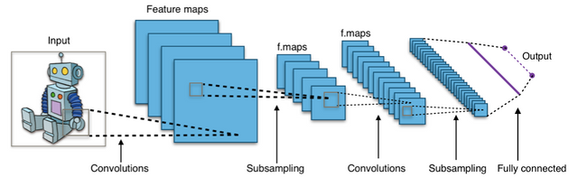

About me
Building intelligent systems, from research to production
I'm an AI and software engineer working at the intersection of machine learning, agentic AI, reinforcement learning, and practical software development. I build systems that combine language, vision, structured data, simulation, and external tools—then evaluate them against real-world requirements.
My work spans custom ML architectures, RAG and multimodal applications, cybersecurity-oriented AI, automation, and full-stack services. I care about choosing the right level of complexity: from straightforward deterministic software to specialized neural models when they genuinely improve the result.
AI agents & LLM pipelinesPrediction & simulationComputer visionSoftware & APIs
Selected work
Projects & research
NBASimulation
Ongoing research · Sports ML
NBA Play-by-Play Prediction & Simulation Engine
A modular possession- and event-level modeling system incorporating lineups, rotations, substitutions, player-event probabilities, and game-state transitions. Combines classical ML, probabilistic models, simulation, and careful out-of-time evaluation for game and player predictions. Part of ongoing sports modeling research; not presented as a published paper.
AIMultimodal
Conversational AI · Vision
Multimodal Medical Reasoning Prototype
Designed a conversational assistant around an open-ended objective: generate three ranked diagnostic suggestions using patient history, chat input, and visual evidence. Built a pipeline to bring these sources into a coherent structured output. Research/prototype work, not a clinically validated diagnostic device.
{ }Agents & RAG
Applied LLM systems · Automation
AI Agents, Retrieval & Multimodal Workflows
Built language, voice, and vision processing pipelines for consumer and enterprise use, including RAG applications, structured model outputs, API-connected workflows, and task-tuned open-weight systems. Emphasis on validation, reliability, and appropriate human oversight.
SECAI Security
Adversarial evaluation · Hardening
AI-Assisted Vulnerability Assessment & Defense
Applied frontier and task-tuned open-weight AI to vulnerability discovery, adversarial analysis, and production-system hardening. Focused on practical risk modeling, identifying failure cases, and strengthening existing systems.
APIPayments
Full-stack development · Integrations
Payment Finalization & Transaction Workflows
Developed a payment integration module involving C#/.NET, API interactions, transaction/activity logging, and a web-facing payment workflow. Work included deployment architecture, error handling, and integration with existing infrastructure.
Reinforcement learning · Finance
RL for Cryptocurrency Portfolio Management
Researched reinforcement-learning approaches to portfolio allocation and market decision-making, with time-series modeling, backtesting, and model evaluation.
Earlier research · Sports prediction
Sports Outcome Prediction
Earlier work combining neural networks, feature engineering, and conventional statistical approaches for MLB and NBA outcome prediction; a foundation for my newer simulation research.

Computer vision · Applied ML
Vision, Image Similarity & Anomaly Detection
Custom image-analysis pipelines and detection models, including lightweight image similarity using Haar wavelets and Radon transforms, alongside structured-data anomaly detection.
Professional background
Work experience
Artificial Intelligence Engineer · Turing Completed
April 2020 – Present
Research, design, and implement ML and AI systems across predictive modeling, reinforcement learning, multimodal applications, and production-oriented integrations. Evaluate architectures against task, data, and deployment constraints.
Full-Stack ML Engineer · Stareable
June 2018 – February 2020
Worked on recommendation systems and user-facing software, applying machine learning to content discovery and engagement alongside full-stack product development.
Backend Cryptographic Engineer · Portable Hats Security
May 2016 – March 2018
Developed user-facing cryptographic applications and implementations of encryption, hashing, and secure software components.
Knowledge sharing
Teaching & technical education
I've delivered multiple introductory machine-learning courses and tutored private students, translating advanced AI concepts into approachable explanations and hands-on exercises. My instructional work includes Microsoft Azure AI Fundamentals learning material.
I also contribute to AI StackExchange, where I have ranked among the top 50 contributors, with much of my reputation established before the modern LLM era.